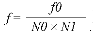
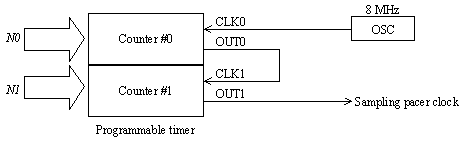
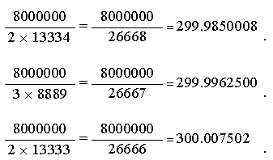

Sampling Rate Limitation
The sampling rate is configurable by the AdSetSamplingConfig function, and the rate is obtained by the following equation:

Where, f: Sampling rate (Hz)
f0: Base clock frequency (Hz), 8MHz
N0: Integer divisor of the counter, 2 through 65535
N1: Integer divisor of the counter, 2 through 65535The actual sampling rate has some errors against the specified rate to the AdSetSamplingConfig function because the ideal combination of integer divisor N0 and N1 could not be obtained for the rate.

Example) When a sampling rate of 300 Hz is specified to the AdSetSamplingConfig function, appropriate integer divisor of N0 and N1 are 3 and 8889, respectively. And actual sampling rate becomes 299.99625 Hz. 
© 2000, 2013 Interface Corporation. All rights reserved.